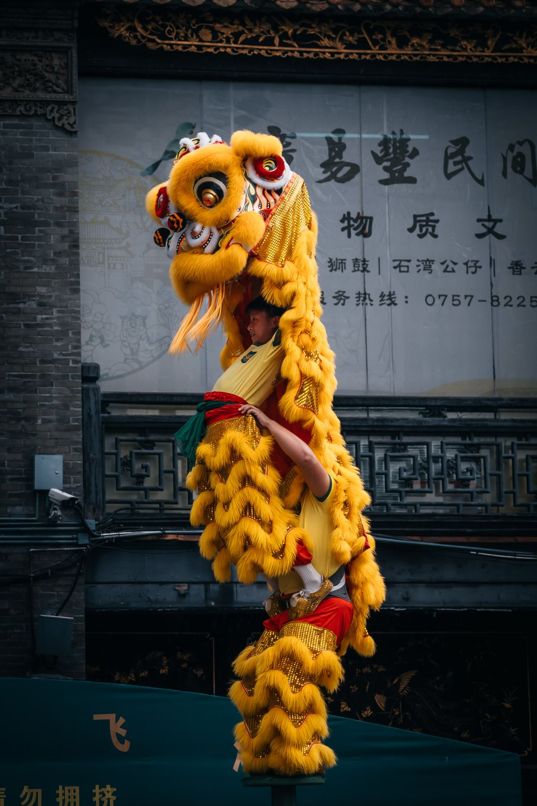

Case 01 · Corporate cai qing
Fourteen stops, three floors, thirty-eight minutes
A law firm's headquarters wanted the lion at every tenancy on its three floors on the morning of Day 1 — before the partners' lunch, with the lifts shared with a working building.
- Date
- Tue 17 Feb · Day 1
- Format
- Full-day cai qing route
- Troupe
- 12 · two lions rotating
- Run
- 38 min · 14 stops
The brief
Fourteen tenancy entrances across three floors, each wanting its own cai qing, inside a 45-minute window on the busiest morning of the season. The standard format stops at twelve stops with one lion — this was past it.
The decisions
Booked as a full-day route with a troupe of twelve and two lions rotating, so no pair dances fourteen stops back-to-back. The route was walked twice in the week before; facilities hung each lettuce the day prior; lift moves were rehearsed with the lion folded to fit a standard car, and the order of floors ran top-down so the troupe never waited on a lift twice.
The outcome
All fourteen stops in thirty-eight minutes, finishing with a full-percussion stop in the lobby. The firm rebooked for 2027 before the Lantern Festival — at the peak rate, without being asked twice.
“Fourteen stops, three floors, thirty-eight minutes — and the lion was waiting in the lift lobby before our facilities team had finished their coffee. Our tenants are still talking about it.”